PDF dosyalarınızı açın.
Open your PDF files.
Şunları yapabilirsiniz:
You can:
Birden fazla PDF'yi birleştirin
Sayfa yönünü değiştirin
Belirli sayfaları silin
Merge multiple PDFs
Change page orientation
Delete specific pages

PDF jem
download
rotate ↻
all ⇆
all ⇅
del ×
New feature added! Please reload.
reload
open pdf
＋